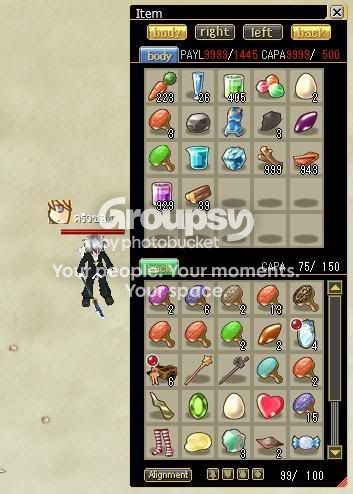

หน้า 187 จากทั้งหมด 276

โพสต์แล้ว:
เสาร์ 20 ก.ย. 2008 12:37 amโดย ECO
กลับถึงบ้านแล้ว กลับมาตอนนี้จะมีคนรอแต่งด้วยไหมเนี่ย - -
ปล. เฟรย์เกิดวันเดียวกับเพื่อนเราเลยแฮะ พรุ่งนี้ก็จะไปเลี้ยงฉลองวันเกิดเพื่อนล่วงหน้าพอดี - - ไม่ได้เล่นอีกละ
โพสต์แล้ว:
เสาร์ 20 ก.ย. 2008 11:41 amโดย ECO
เฮอะๆๆ เรามันชาวนายาจก
สาวไม่เหลียว
หญิงไม่แล
ขอแก่ๆๆก็ได้
โพสต์แล้ว:
เสาร์ 20 ก.ย. 2008 12:44 pmโดย ECO
หลังสู้ฟ้า หน้าสู้ดิน
โพสต์แล้ว:
เสาร์ 20 ก.ย. 2008 11:08 pmโดย ECO
ตอนนนี้ เวลาทั้งหมดที่เข้าเกมส์วุ้น เอาไปหา S wood ตอนนี้ได้มา พัน นิสๆ ละ ใช้เวา ปะมาน 6 ชม แศษๆ
ปล. หลับคาจอ....ราตรีสวัสดิ์
โพสต์แล้ว:
อาทิตย์ 21 ก.ย. 2008 1:42 pmโดย ECO
GLucas เขียน:หา S wood ตอนนี้ได้มา พัน นิสๆ ละ ใช้เวา ปะมาน 6 ชม แศษๆ
อะโห

hock:
โพสต์แล้ว:
อาทิตย์ 21 ก.ย. 2008 3:49 pmโดย ECO
เรยทำให้วุ้นรู้ว่า CAPA ก่ะ PAYL มันสูงสุดแค่ 9999 เท่านั้น มากกว่านี้ไม่ได้และ
ช่ายม่ะ

โพสต์แล้ว:
อาทิตย์ 21 ก.ย. 2008 6:35 pmโดย ECO
หาแถวใหนงะ
จะได้ไปหาบ้าง
ไม่ต้องกลัวไปแย้ง
โคละ sv
โพสต์แล้ว:
อาทิตย์ 21 ก.ย. 2008 7:56 pmโดย ECO
[FT]-SataN- เขียน:หาแถวใหนงะ
จะได้ไปหาบ้าง
ไม่ต้องกลัวไปแย้ง
โคละ sv
อ่อ จ้า
Snop hill กลางบนสุด มีชายหาดอ่างิ
เซิฟเดียวกันกะม่ะเปนไร แค่นี้ก็ใช้ทำเควสได้ ถึงสิ้นปีนู้น
โพสต์แล้ว:
จันทร์ 22 ก.ย. 2008 10:33 amโดย ECO
พูดถึงstrong wood สงสัยต้องไปหามั่งละ ตอนแรกมีเก็บอยู่เยอะมากจนคิดว่าจะใช้ไม่หมด พอเอามาใช้ส่งเควสเริ่มหมด...
วุ้นอยู่ทาโกะนี่ใช่มั้ย เดี๋ยวจะแอบไปตีมั่ง มีใครจองวันมั้ย ว่าจะกด*2 :lol: ...
โพสต์แล้ว:
จันทร์ 22 ก.ย. 2008 11:01 amโดย ECO
No one เขียน:พูดถึงstrong wood สงสัยต้องไปหามั่งละ ตอนแรกมีเก็บอยู่เยอะมากจนคิดว่าจะใช้ไม่หมด พอเอามาใช้ส่งเควสเริ่มหมด...
วุ้นอยู่ทาโกะนี่ใช่มั้ย เดี๋ยวจะแอบไปตีมั่ง มีใครจองวันมั้ย ว่าจะกด*2 :lol: ...
แถวนั้นจามีคนอยู่ คน สอง คน เท่านั้นละ เห็นไปตี ม้าแดง แต่บางทีมันก่ะตีขอนไม้อ่านะ
ถ้ากดกระจก ต้องตี Zereb ด้วย แสตม ดรอบเป็นน้ามเรย วุ้นยังได้มา 20 ดวง เรย
โพสต์แล้ว:
จันทร์ 22 ก.ย. 2008 11:13 amโดย ECO
แสตมป์ม้าตัวนั้นได้จนเบื่อละ ตอนที่เล่นชาวนาตัวที่2 ไปเก็บเลเวลมันตรงนั้นเพราะหาน้ำมานามาส่งเควสเปิดร้านด้วย ดรอปมาเยอะสงสัยเพราะไม่มีคนไปตีเฉลี่ยไอเท็ม- -"...
อืม แต่แมปนั้นคนน้อยจริงๆถ้าเทียบกับตรงแมปก่อนแลกบัตรเข้าเมือง...
โพสต์แล้ว:
จันทร์ 22 ก.ย. 2008 2:37 pmโดย ECO
GLucas เขียน:เรยทำให้วุ้นรู้ว่า CAPA ก่ะ PAYL มันสูงสุดแค่ 9999 เท่านั้น มากกว่านี้ไม่ได้และ
ช่ายม่ะ
เลขมันแสดงแค่ 9999 ครับ แต่ใส่จริงๆน่าจะมากกว่านั้น 8)
ผมเคยรับ Machine Piece จนได้มาเกือบๆ 8000 ชิ้น (เกิน 9999 มาไม่รู้เท่าไหร่)
hock:
โพสต์แล้ว:
จันทร์ 22 ก.ย. 2008 7:42 pmโดย ECO
อะโห แบกไปได้แต่ละคน -*-
โพสต์แล้ว:
อังคาร 23 ก.ย. 2008 8:51 amโดย ECO
เคยแบกคีตินสูงสุดแค่6,000เอง แต่ถ้าจะนับที่เคยแบกเยอะสุดก็ต้องที่จัดคลังตัวเองให้เป็นระเบียบ แบบว่าโยนใส่ตัวแล้วค่อยโยนกลับเข้าคลังจัดๆ ดูๆแล้วก็เกิน9999เหมือนกันนะ...
โพสต์แล้ว:
อังคาร 23 ก.ย. 2008 10:34 amโดย ECO
แต่ละคน แบกของได้เยอะกันจริง
คีติน 80 อัน ก็จะเดินไม่ได้อยู่แล้ว =w=